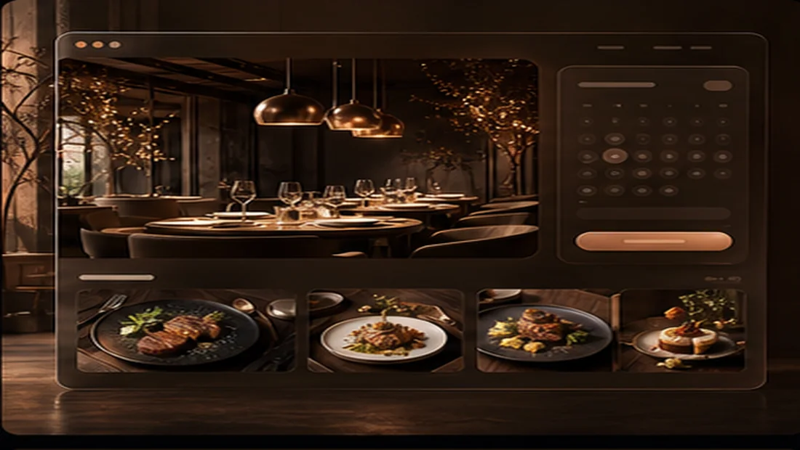

Photo, price, short copy and matching drink suggestion.
Restaurant, menu and booking
A restaurant website that does more than show the menu; it books tables.
Built for restaurants, cafes and lounges with visual menus, daily specials, table booking, quick ordering and menu management.

Choose date, guests and submit request.
Add dishes, prices, images and availability.
Show high-converting specials on the homepage.
Shorter order path, more calls and bookings.
Real restaurant website feeling
From menu discovery to table booking, the customer path is complete.
This demo can include restaurant story, digital menu, quick ordering, daily campaigns, reviews and food management panel.